Exercise 5 — API Control Plane & the Developer Portal
Switch to API Control Plane: verify your Cloud API Management gateway is connected, discover your APIs and API Products, publish them, then brand the Developer Portal and call your API live from it.
What you'll cover
- How to Configure Location Settings
- Verifying the Cloud API Management Gateway
- Discovering your APIs and API Products
- How to Configure the Developer Portal
How to Configure Location Settings
Next, let’s go over the different configuration features.
-
1
From the left navigation, select Configuration. The screen refreshes and takes you to the General tab of the Configuration page. This will show the Location Settings. If needed, select your preferred Date Format and Time Format.
-
2
Select Save.
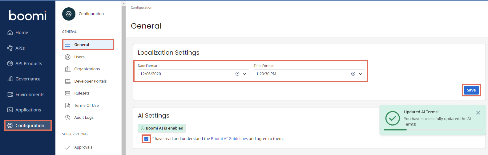
-
3
Follow the Boomi AI Landing Page hyperlink
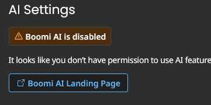
-
4
Click Get Started and Accept the terms. Go back to the Configuration page and refresh. It should now show Boomi AI as enabled.
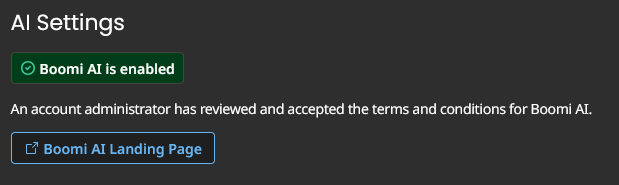
Verifying the Cloud API Management Gateway
Cloud API Management or CAM is considered a special Gateway. API Control Plane provides management, governance and federation of Gateways and their deployed APIs. Follow these instructions to confirm if CAM appears as a Managed Gateway.
-
1
From the left select Gateways. The Gateways page opens. If you have a Boomi Gateway installed, this page will show your local Boomi API Gateway along with the Cloud API Management managed Gateway. The page also shows your CAM Gateway is Connected.
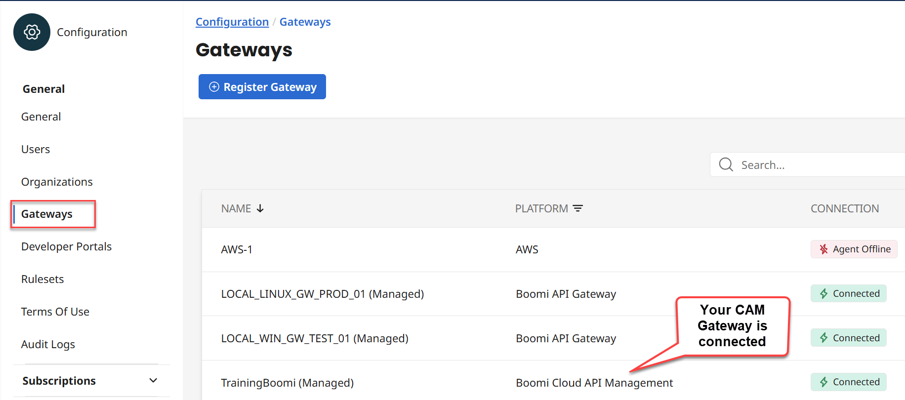
This means, your API Control Plane can see the Cloud API Management (CAM) Gateway, and it is automatically listed. No need for registration. Boomi tools and products can connect to each other automatically.
In this activity, you will complete the following:
Discover your APIs
Discover your API Products
Enable Developer Portal Visibility for assets
Enable MCP Server for assets
Discovering your APIs and API Products
Now that you have a connected Cloud API Management Gateway, you are ready to discover your CAM API Definition.
-
1
From API Control Plane’s left navigation, select Environments.
-
2
Identify and select your Boomi Cloud API Management environment.
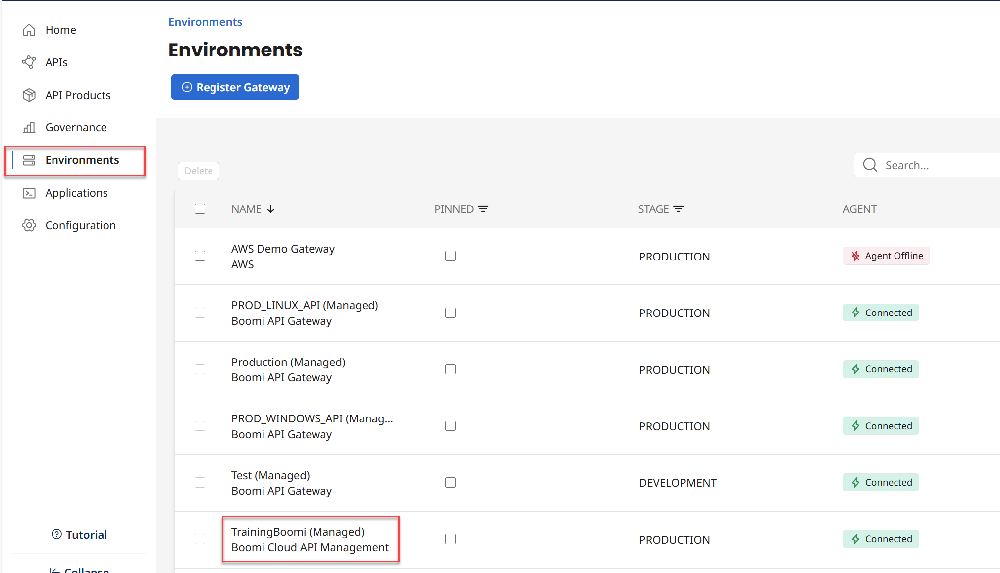
The next page shows the details of your CAM environment. From the top, select +Discover. The Discovery dialog appears. Select the Discover APIs button.
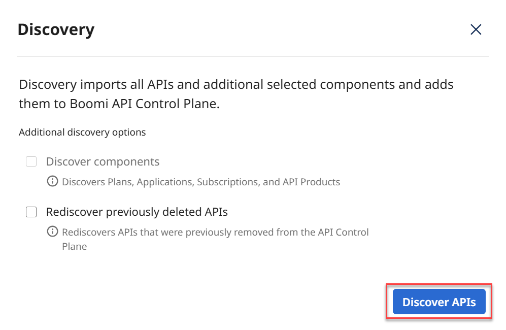
The system processes your request and starts discovering APIs in your CAM Gateway. When done, the Swagger Petstore API is displayed. If for any reason you created other API Definitions in CAM, those will be listed here.
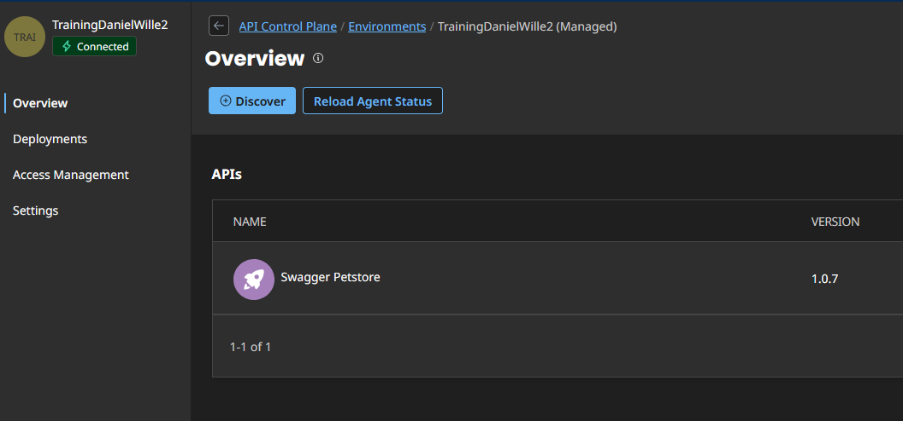
-
3
Navigate to the API Products tab. You should see an entry labeled Corporate-IT_PKG - Unlimited-IT that was discovered from your CAM environment. Select it.
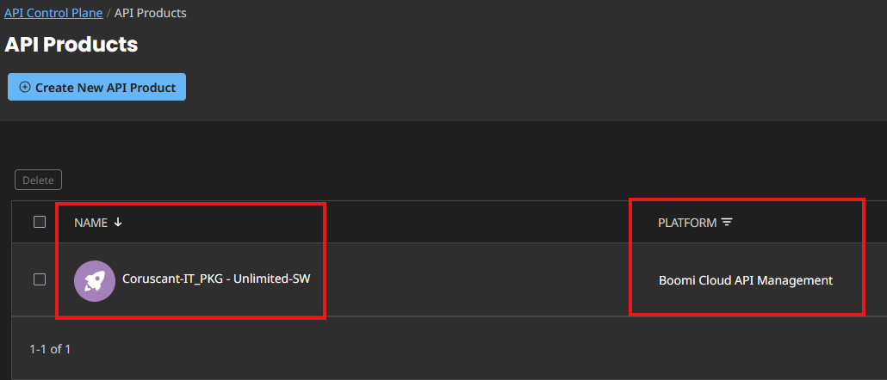
-
4
Click on Assigned APIS. Here you should see your Swagger Petstore API. If other APIs had been imported from other API environments with the same Organizational ownership, these would appear in here as well and could be added to the same API Product.
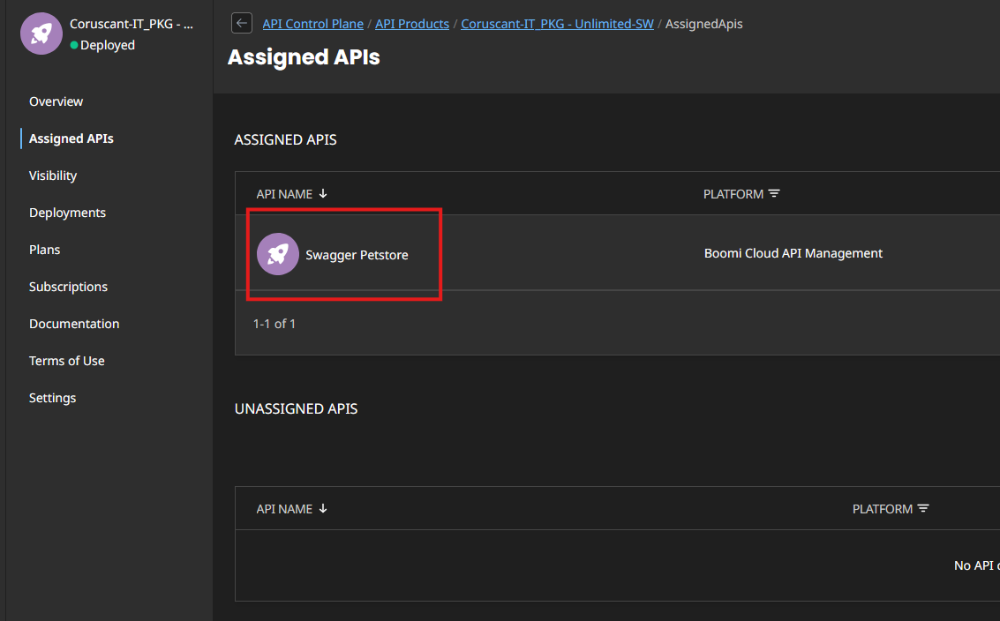
-
5
Click on Visibility. Enable the toggle to Expose APIs as Tools. This will enable all APIs in this API Product as Tools in an MCP Server. Enable the toggle to Publish to the Developer Portals. This will make this API Product and associated APIs available to the Developer Portal(s) where their Organization is configured. Ensure the Privacy is set to Public.
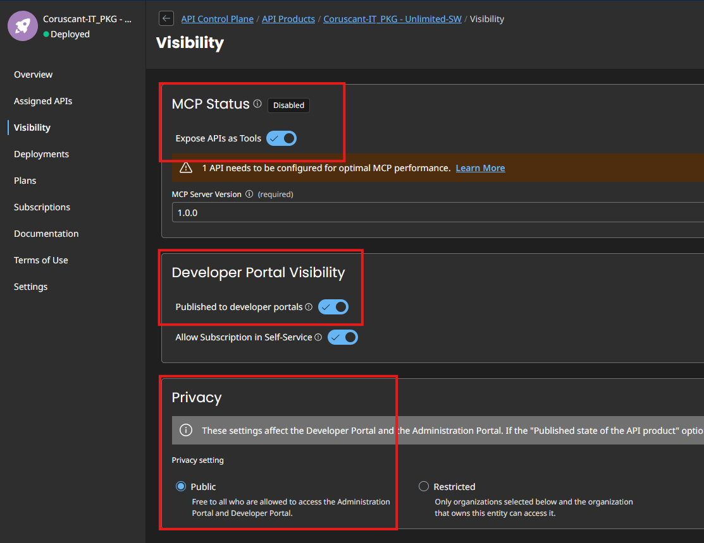
-
6
Click on Plans. Note that the plan you configured in CAM has been imported for use. Click on Subscriptions. Note your subscription has been imported as well.
In this activity, you will complete the following:
Basic Developer Portal Configuration
Test your API
How to Configure the Developer Portal
-
1
From the left navigation, select Configuration. Select Developer Portals, and click the white text to select the default developer portal.
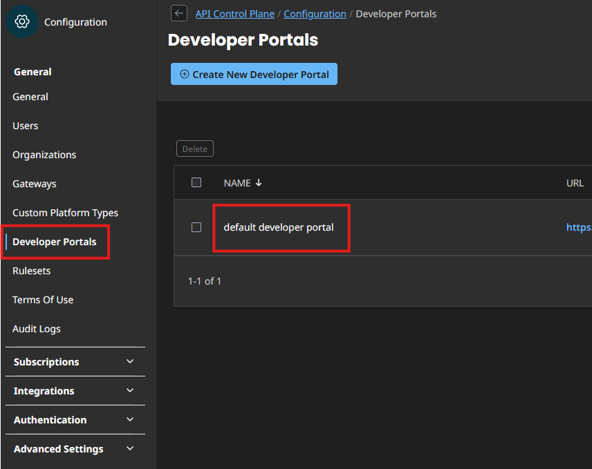
On the General Info tab, change the name to something such as Boomi Labs Developer Portal, and click Save in the bottom right corner.
-
2
Click on the Customization tab. Here we can set logos and colors for our developer portal to add some branding and customization. Find a logo for your company online. SVGs work well for the general logo, and PNGs for the favicon. Upload it for the three logo options. Add custom colors as well. For example, change Accent and Main Menu Color to: R6 G61 B88. Click Save
-
3
Click back on the Developer Portals tab under the Configuration menu. Click on the hyperlink to take you to your developer portal.
-
4
Click on Applications. Select your PETSTORE_APP that you created in CAM. Click on Subscriptions, then select the Secrets button. Here you can find the information about your MCP Server and view/copy your API Key (Package Key) you created in CAM. Copy that key now, then click the X on the top of the box.
-
5
Click on APIs. Select the Swagger Petstore. Click Try it Out.
-
6
Click the Authorize box in the top right hand corner. Paste in the copied API Key and authorize yourself. Click on the GET /pet/findByStatus endpoint. Select an option in the status box, such as Sold, then click Execute. You should see a successful operation with a response appear. Note also the sample code snippets provided when using this API in the future.
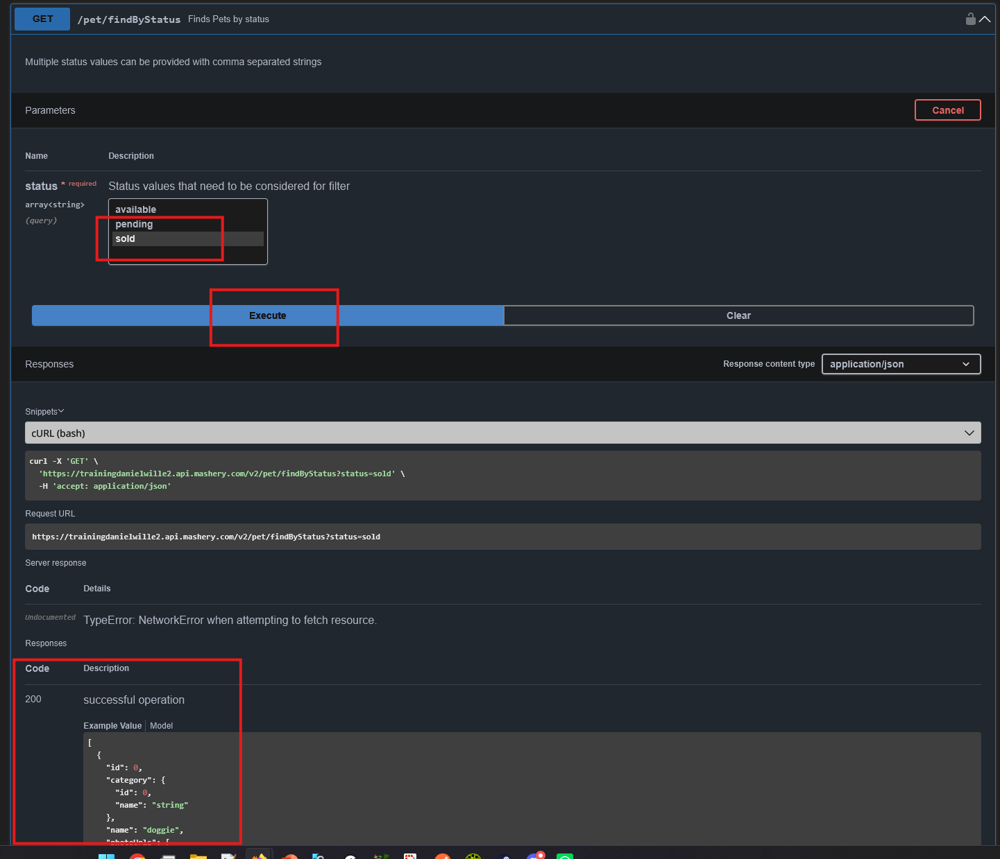